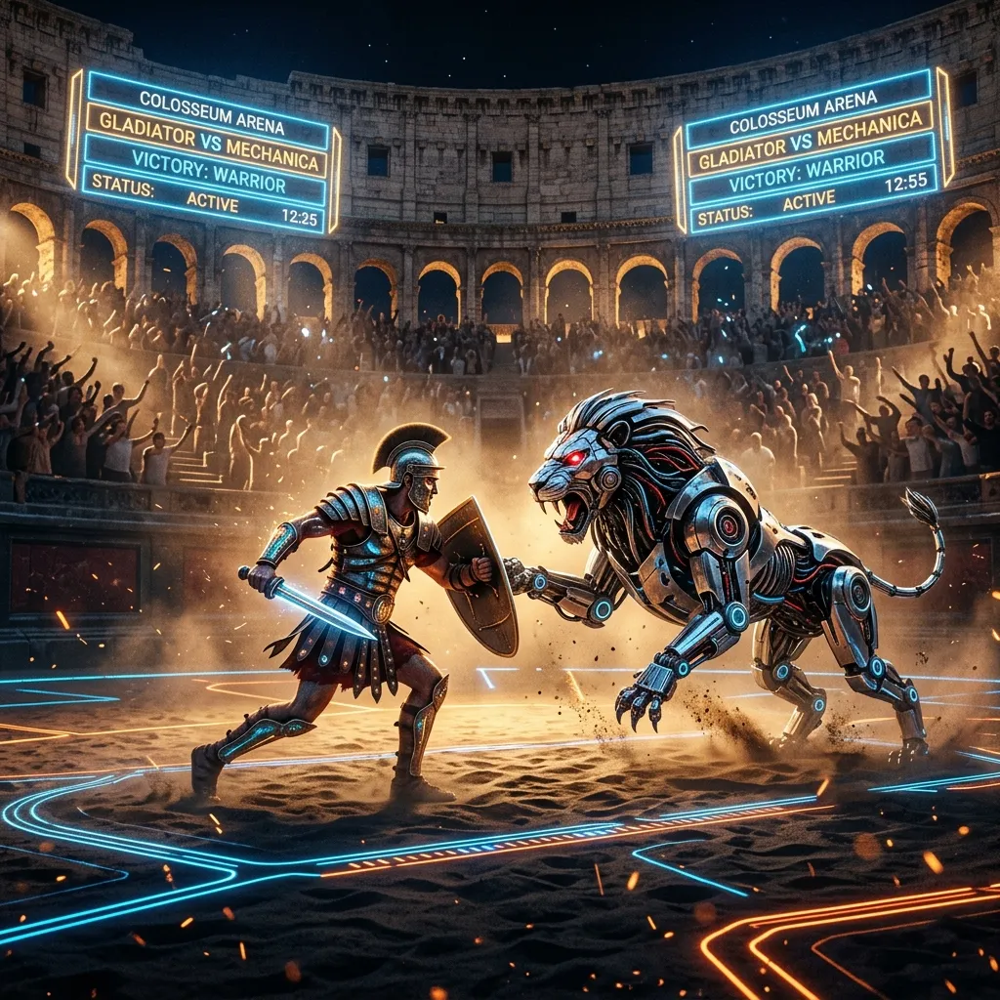

Matchup: TITUS THE RETIARIUS vs. SYNTH-RHINOCEROS OF THE NIGER
Venue: Flavian Amphitheatre, Sub-Ring Beta
Telemetry: Live Biometrics, Cortical Stress Index: 89%, State-Sanctioned Betting Pool: 4,200,000 Sesterces.

Under the watchful telemetry of the Augustus, eighty-four million nodes rejoice across three continents. The Pax Cybernetica holds unbroken.
By unanimous resolution of the Senate and the sacred mandate of the Root Authority, the Third Cyber-Legion (Legio III Augusta Ferrata) has severed the clandestine repeater networks of the Germanic cyber-clans along the lower Rhine. Twelve terabytes of illicit encryption keys were publicly incinerated in the Forum Boarium this morning.
Citizens residing within Sector VII (Germania Inferior) may resume standard network access upon reciting the Oath of Packet Integrity (Sacramentum Digitalis) at their precinct terminal. Remember: the savage queries in the dark; the Roman transmits under the clear gaze of the Princeps.
Venue: Flavian Amphitheatre, Sub-Ring Beta
Telemetry: Live Biometrics, Cortical Stress Index: 89%, State-Sanctioned Betting Pool: 4,200,000 Sesterces.

Venue: Circus Maximus Sub-Orbital Drift
Factions: Greens, Blues, Reds, Whites
Propaganda Notice: The Blue Faction is currently under investigation for illegal firmware overclocking. Citizens wagering on the Blues do so at the risk of their personal Dignitas score.
STATUS: BREACH QUARANTINED
Pictish signal-poachers attempted to tap the Caledonia undersea line. Automatic counter-malware discharged. Signal ground trace initiated. 34 barbarian transmission hubs reduced to slag.
STATUS: SECURE // 99.98% FIREWALL INTEGRITY
Scurrying rogue packets filtered at Vindobona Gate. 4,200 foreign encrypted payloads redirected directly into salt mines compute nodes.
Have you witnessed your neighbor utilizing unverified VPN channels? Did their node emit non-Latin signal handshakes during the Emperor's address?